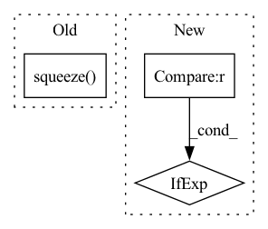

Pattern ID :17640
Before Change
am = input.argmax(axis=axis)
am = np.expand_dims(am, axis=axis) if axis is not None else np.array([am])
ctx.save_for_backward(input.shape, am, axis)
return np.take_along_axis(input, am, axis=axis).squeeze(axis=axis)
@staticmethod
def backward(ctx, grad_output):
shape, am, axis = ctx.saved_tensorsAfter Change
class Max(Function):
@staticmethod
def forward(ctx, inp, axis=None):
axis = [axis] if type(axis) == int else axis
ret = np.amax(inp, axis=None if axis is None else tuple(axis), keepdims=True)
ctx.save_for_backward(inp, axis, ret)
if axis is not None:In pattern: SUPERPATTERN
Frequency: 4
Non-data size: 3
Instances Fragment ID: 58260909
Project Name: geohot/tinygrad
Commit Name: e2f833f58fa165aabae3b587cb84733eadcbd490
Time: 2020-12-30
Author: 65973015+marcelbischoff@users.noreply.github.com
File Name: tinygrad/ops_cpu.py
M Class Name: Max
N Class Name: Max
M Method Name: forward(3)
N Method Name: forward(3)
M Parent Class: Function
N Parent Class: Function
M File Name: tinygrad/ops_cpu.py
N File Name: tinygrad/ops_cpu.py
M Start Line: 119
M End Line: 122
N Start Line: 119
N End Line: 124
Before Change
Process Emitters
frames, target, weight, tar_emitter = self._process_sample(frames, tar_emitter, bg_frame)
return self._return_sample(frames, target.squeeze(0), weight.squeeze( 0) , tar_emitter)
class SMLMLiveDataset(SMLMDataset):After Change
Pad index, get frames and emitters.
ix = self._pad_index(ix)
tar_emitter = self._emitter[ix] if self._emitter is not None else None
frames = self._get_frames(self._frames, ix)
bg_frame = self._bg_frames[ix] if self._bg_frames is not None else None
Fragment ID: 58260910
Project Name: turagalab/decode
Commit Name: 2852e463f5f59d1baa6b119500929967a9a2d5f3
Time: 2020-05-26
Author: gitdev@LRM.PHOTO
File Name: deepsmlm/neuralfitter/dataset.py
M Class Name: SMLMStaticDataset
N Class Name: SMLMStaticDataset
M Method Name: __getitem__(2)
N Method Name: __getitem__(2)
M Parent Class: SMLMDataset
N Parent Class: SMLMDataset
M File Name: deepsmlm/neuralfitter/dataset.py
N File Name: deepsmlm/neuralfitter/dataset.py
M Start Line: 147
M End Line: 155
N Start Line: 148
N End Line: 156
Before Change
logp_targets = torch.cat(
(logp_targets, log_probs.view(-1)[0:1])
)
positions = torch.cat((positions + 1, blank.squeeze( 1) ))
// Extend hyp by selection
for j in range(logp_targets.size(0)):After Change
log_probs.view(-1), k=self.beam_size, dim=-1
)
best_logp = (
logp_targets[0]
if positions[0] != blank
else logp_targets[1]
)
// Extend hyp by selection Fragment ID: 58260912
Project Name: speechbrain/speechbrain
Commit Name: 17a7851375fa654da16a5828035f90f8eae334d6
Time: 2020-11-15
Author: ff936tw@gmail.com
File Name: speechbrain/decoders/transducer.py
M Class Name: TransducerBeamSearcher
N Class Name: TransducerBeamSearcher
M Method Name: transducer_beam_search_decode(2)
N Method Name: transducer_beam_search_decode(2)
M Parent Class: torch.nn.Module
N Parent Class: torch.nn.Module
M File Name: speechbrain/decoders/transducer.py
N File Name: speechbrain/decoders/transducer.py
M Start Line: 260
M End Line: 339
N Start Line: 260
N End Line: 337
Before Change
if self.output_layer.bias is not None:
new_bias = torch.mean(self.output_layer.bias).unsqueeze(1).T
if n_classes_to_add > 1:
new_bias = new_bias.unsqueeze(1).T.repeat(1, n_classes_to_add, 1).squeeze()
self.output_layer.bias = nn.parameter.Parameter(
torch.cat([self.output_layer.bias, new_bias], axis=0)
)
self.output_layer.out_features += n_classes_to_addAfter Change
new_bias = torch.empty(n_classes_to_add)
fan_in, _ = nn.init._calculate_fan_in_and_fan_out(
self.output_layer.weight)
bound = 1 / math.sqrt(fan_in) if fan_in > 0 else 0
nn.init.uniform_(new_bias, -bound, bound)
self.output_layer.bias = nn.parameter.Parameter(
torch.cat([self.output_layer.bias, new_bias], axis=0) Fragment ID: 58260913
Project Name: online-ml/river-torch
Commit Name: 569c438c27a92f58d761de6d54cc27c9cb1ec88f
Time: 2022-09-28
Author: cedric.kulbahc@googlemail.com
File Name: river_torch/classification/classifier.py
M Class Name: Classifier
N Class Name: Classifier
M Method Name: _add_output_features(2)
N Method Name: _add_output_features(2)
M Parent Class: DeepEstimator,base.Classifier
N Parent Class: DeepEstimator,base.Classifier
M File Name: river_torch/classification/classifier.py
N File Name: river_torch/classification/classifier.py
M Start Line: 308
M End Line: 311
N Start Line: 303
N End Line: 312